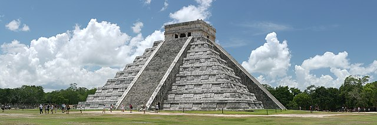
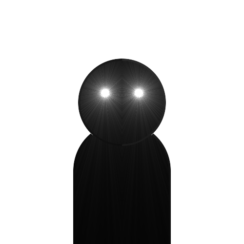

Les Aztèques sont un peuples d'amériques.
Les astèques ont migré pendant plusieurs générations avant de s'implanter sur des îlots au milieu du lac Texcoco et d'y fondé la ville de Mexico-Tenochtitlan qui est aujourd'hui México la capital du Mexique.
Leur civilisation s'est éfondré à l'arrivé des Espagnol en Amérique. Les maladies qu'ils ont apporté de l'Europe ont décimé les populations locales.
En 1375, le premier souverain Aztèque, Acamaplchli est élu.
Les astèques construisaient des pyramides pour honorer leurs dieux.
Le sacrifice humain était, dans la civilisation aztèque, comme dans la plupart des civilisations précolombiennes de Mésoamérique, un rite extrêmement courant et essentiel1ement comme l'attestent plusieurs documents indigènes et espagnols ainsi que de nombreuses découvertes archéologiques. Les méthodes de sacrifice et les types de victimes sacrifiées étaient très variés.
Le Templo Mayor (« Grand Temple » en espagnol) est le nom moderne de la grande pyramide à degrés de Tenochtitlan, capitale des Aztèques, ainsi que du centre cérémoniel dans lequel elle se situaits. Après la conquête espagnole, au XVIe siècle, le Templo Mayor fut détruit et son emplacement exact fut oublié, à la suite des multiples chantiers de construction de la ville moderne de Mexico, jusqu'à ce que des fouilles archéologiques en mettent au jour les fondations, à partir de 1978. Pour exhumer le site du Grand Temple, des immeubles ont été rasés et une artère de la capitale mexicaine coupée.
La cuisine aztèque, c'est-à-dire la préparation des aliments dans l'Empire aztèque avant les premiers contacts avec les Européens en 1519, se caractérisait par l'utilisation du maïs comme aliment de base principal présent à tous les repas, comme le blé en Europe ou le riz en Asie de l'Est, notamment sous la forme de tortillas, tamales, gruau ou atoles . La cuisson des grains de maïs dans des solutions alcalines, un processus appelé nixtamalisation, augmentait significativement la valeur nutritionnelle de cet aliment de base.
